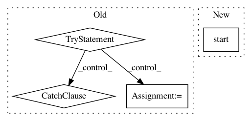

634c2049b8f95c45495811197346964e0826df2e,src/graph_transpiler/webdnn/backend/interface/generator.py,,generate_descriptor,#Any#Any#,81
Before Change
generator = get_generator(backend)
try:
// Graph is transformed by backend-specific optimization
graph = copy.deepcopy(graph)
except RecursionError:
// Occurs when the graph has many nodes (e.g. ResNet)
raise RecursionError("Recursion error occurred when copying graph." +
" sys.setrecursionlimit(10000) may help fixing it.")
// some optimize rule work even when OPTIMIZE=0
graph, _ = GeneralOptimizeRule().optimize(graph)
return generator(graph, **kwargs)
After Change
sys.setrecursionlimit(16384)
threading.stack_size(64 * 1024 * 1024)
t = threading.Thread(target=worker)
t.start()
t.join()
if len(error) > 0:
raise error[0]
return result[0]
In pattern: SUPERPATTERN
Frequency: 4
Non-data size: 4
Instances
Project Name: mil-tokyo/webdnn
Commit Name: 634c2049b8f95c45495811197346964e0826df2e
Time: 2018-11-18
Author: hidaka@mi.t.u-tokyo.ac.jp
File Name: src/graph_transpiler/webdnn/backend/interface/generator.py
Class Name:
Method Name: generate_descriptor
Project Name: descarteslabs/descarteslabs-python
Commit Name: 9867d46676b48fbf23b8998a0a6f5269cbb0bace
Time: 2019-08-21
Author: 13060286+stephaniegott@users.noreply.github.com
File Name: descarteslabs/workflows/interactive/layer_controller_row.py
Class Name: LayerControllerRow
Method Name: autoscale
Project Name: MycroftAI/mycroft-precise
Commit Name: 5d925dae5916ea1adf684a4ea2676777a7ceba80
Time: 2017-11-28
Author: matthew3311999@gmail.com
File Name: precise/record.py
Class Name:
Method Name: main
Project Name: Rostlab/nalaf
Commit Name: 03b8bb0b05fbc75e2e79b8b782790d5b07cf7947
Time: 2015-08-05
Author: aleksandar.bojchevski@gmail.com
File Name: nala/learning/postprocessing.py
Class Name: PostProcessing
Method Name: process